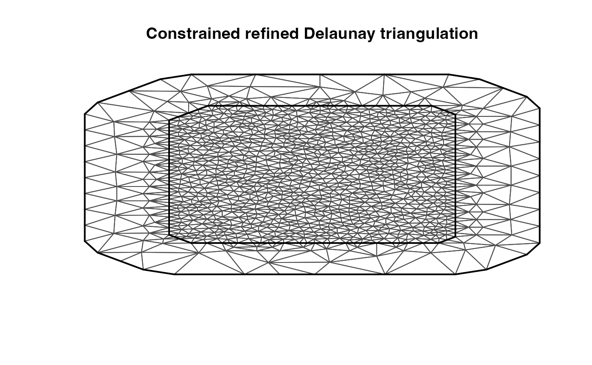

Ngme2 Models
ngme_models.RmdIn this vignette, we will introduce a few available models in ngme2.
AR(1) model
An autoregressive (AR) model specifies that the output variable depends linearly on its own previous values and on a stochastic term. The simplest AR model is an AR(1) model, which is given by:
\[\begin{align} X_1 &= \epsilon_1, \\ X_i &= \alpha X_{i-1} + \epsilon_i, \; i = 2, \dots , n, \end{align}\] where, \(\epsilon_1, ..,\epsilon_n\) is either i.i.d. NIG or Gaussian noise.
It is easy to verify that \[ K{\bf X} = \boldsymbol\epsilon,\] where \({\bf X} = (X_1, \dots, X_n)\), \({\boldsymbol \epsilon} = (\epsilon_1, \dots, \epsilon_n)\), and \[ K = \begin{bmatrix} \alpha \\ -1 & \alpha \\ & \ddots & \ddots \\ & & -1 & \alpha \end{bmatrix}. \]
The ngme2 usage for specify a AR(1) model is the
following:
library(ngme2)
year <- c(2021, 2022, 2024, 2025)
model_ar1(year)
#> as(<dgTMatrix>, "dgCMatrix") is deprecated since Matrix 1.5-0; do as(., "CsparseMatrix") instead
#> Ngme model: ar1
#> Model parameters:
#> alpha = 0.5
#>
#> Noise type - normal
#> Noise parameters:
#> sigma = 1Notice that for AR model, we only accept integer values as index, otherwise it is hard to interpret. See for details.
Random walk model
A random walk is a random process that describes a path that consists of a succession of random steps.
The random walk process of order 1 is given by \[ X_{i} - X_{i-1} = \epsilon_i, \; i = 2, \dots , n, \] where, \(\epsilon_1, ..,\epsilon_n\) is either i.i.d. NIG or Gaussian noise.
It is easy to verify that \[ K{\bf X} = \boldsymbol\epsilon,\] where \({\bf X} = (X_1, \dots, X_n)\), \({\boldsymbol \epsilon} = (\epsilon_1, \dots, \epsilon_n)\), and the operator matrix
\[ K = \begin{bmatrix} 1 & -1 \\ & 1 & -1 \\ & & \ddots & \ddots \\ & & & 1 & -1 \end{bmatrix}. \] Notice here \(K\) is a constant matrix ((n-1) \(\times\) n).
Similarily, the random walk process of order 2 is given by \[ (X_{i} - X_{i-1}) - (X_{i-1} - X_{i-2}) = \epsilon_i, \; i = 2, \dots , n, \] and the operator matrix \[ K = \begin{bmatrix} 1 & -2 & 1 \\ & 1 & -2 & 1 \\ & & \ddots & \ddots & \ddots \\ & & & 1 & -2 & 1 \end{bmatrix}. \]
The ngme2 usage for specify a random walk model is:
x <- rexp(10)
model_rw(x, order = 1)
#> Ngme model: rw1
#> Model parameters:
#> No parameter needed.
#>
#> Noise type - normal
#> Noise parameters:
#> sigma = 1
model_rw(x, order = 2, circular = TRUE) # the first and last is connected
#> Ngme model: rw1
#> Model parameters:
#> No parameter needed.
#>
#> Noise type - normal
#> Noise parameters:
#> sigma = 1SPDE Matérn model
Several popular Gaussian random field models can be represented as solutions to stochastic partial differential equations (SPDEs) of the form \[ L^\beta (\tau u) = \mathcal{W}. \] Here \(\mathcal{W}\) is a Gaussian white noise, \(L\) is a second-order differential operator, the fractional power \(\beta > 0\) determines the smoothness of u. See An explicit link between Gaussian fields and Gaussian Markov random fields: the stochastic partial differential equation approach for further details.
This package aims to address the non-Gaussian extension to the SPDE approach model by replacing the driven noise \(\mathcal{W}\) to be a non-Gaussian noise \(\mathcal{M}\). More specificly, a type-G Lévy process.
The increment of a type-G Lévy process can be represented as \[ \gamma + \mu V + \sigma \sqrt{V}Z, \] where \(\gamma, \mu\) are parameters, \(Z\sim N(0,1)\) and is independent of \(V\), and \(V\) is a positive infinitely divisible random variable.
One example is the normal inverse Gaussian (NIG) noise. (See
vignette("SPDE-approach", package = "ngme2") for more
details)
The ngme2 usage for specify a spde Matérn model is (a
spatial 2d example):
library(INLA)
#> Loading required package: Matrix
#> Loading required package: foreach
#> Loading required package: parallel
#> Loading required package: sp
#> This is INLA_22.11.22 built 2022-11-22 05:52:45 UTC.
#> - See www.r-inla.org/contact-us for how to get help.
#> - To enable PARDISO sparse library; see inla.pardiso()
#>
#> Attaching package: 'INLA'
#> The following object is masked from 'package:ngme2':
#>
#> f
data(argo_float)
dim(argo_float)
#> [1] 274 4
head(argo_float)
#> lat lon sal temp
#> 1 -64.078 175.821 -0.0699508100 0.4100305
#> 2 -63.760 162.917 -0.0320931260 -0.2588680
#> 3 -63.732 163.294 -0.0008063143 -0.1151362
#> 4 -63.700 162.568 -0.0209534220 -0.2378965
#> 5 -63.269 169.623 0.0409914840 0.3375048
#> 6 -63.113 171.526 0.0269408910 0.2145556
loc <- argo_float[, 1:2]
# generate a INLA 2d mesh using INLA
mesh <- inla.mesh.2d(loc = loc,
max.edge = c(1, 5),
cutoff = 0.4,
offset = c(1,5))
plot(mesh)
# tell the model the location and the mesh to work with
model_matern(loc = loc, mesh = mesh)
#> Ngme model: matern
#> Model parameters:
#> kappa = 1
#>
#> Noise type - normal
#> Noise parameters:
#> sigma = 1